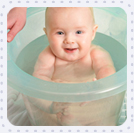

-
1. Stress
Stress is one of the key reasons people struggle to get pregnant. Learn the science behind relaxation techniques for you and your spouse that will help you get pregnant.
-

2. Nutrition
Choose the best foods to help signal to your body that you are ready to care for a child. Our professionals have expert nutrition advice.
-
3.Timing
Learn everything you need to know about ovulation, cycles and more so you can take advantage of when your body is the most ready to get pregnant.
-
4. Science
Learn about all your options to help boost fertility and how to talk to your doctor about what will work best for you.
-

5. Nature
Discover proven natural methods for increasing fertility which have been used around the world for centuries. Completely safe and healthy, your body and mind will be prepared and able to get pregnant.
Your new life is waiting for you.
John WMember - 682619
AngelaMember 263854
Saul Member 421325
Dana Member 401827